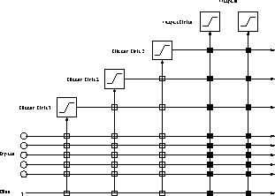

Next: Mathematical Background
Up: Cascade-Correlation (CC)
Previous: Cascade-Correlation (CC)
Cascade-Correlation (CC) combines two ideas: The first is the cascade
architecture, in which hidden units are added only one at a time and
do not change after they have been added. The second is the learning
algorithm, which creates and installs the new hidden units. For each
new hidden unit, the algorithm tries to maximize the magnitude of the
correlation between the new unit's output and the residual error
signal of the net.
The algorithm is realized in the following way:
- CC starts with a minimal network consisting only of an input
and an output layer. Both layers are fully connected.
- Train all the connections ending at an output unit with a usual
learning algorithm until the error of the net no longer decreases.
- Generate the so-called candidate units. Every candidate
unit is connected with all input units and with all existing hidden
units. Between the pool of candidate units and the output units there
are no weights.
- Try to maximize the correlation between the activation of
the candidate units and the residual error of the net by training all
the links leading to a candidate unit. Learning takes place with an
ordinary learning algorithm. The training is stopped when the
correlation scores no longer improves.
- Choose the candidate unit with the maximum correlation,
freeze its incoming weights and add it to the net. To change the
candidate unit into a hidden unit, generate links between the selected
unit and all the output units. Since the weights leading to the new
hidden unit are frozen, a new permanent feature detector is obtained.
Loop back to step 2.
This algorithm is repeated until the overall error of the net falls below
a given value. Figure  shows a net after 3 hidden units
have been added.
shows a net after 3 hidden units
have been added.

Figure: A neural net trained with cascade-correlation after 3 hidden units
have been added. The vertical lines add all incoming activations. Connections
with white boxes are frozen. The black connections are trained
repeatedly.
Next: Mathematical Background
Up: Cascade-Correlation (CC)
Previous: Cascade-Correlation (CC)
Niels.Mache@informatik.uni-stuttgart.de
Tue Nov 28 10:30:44 MET 1995